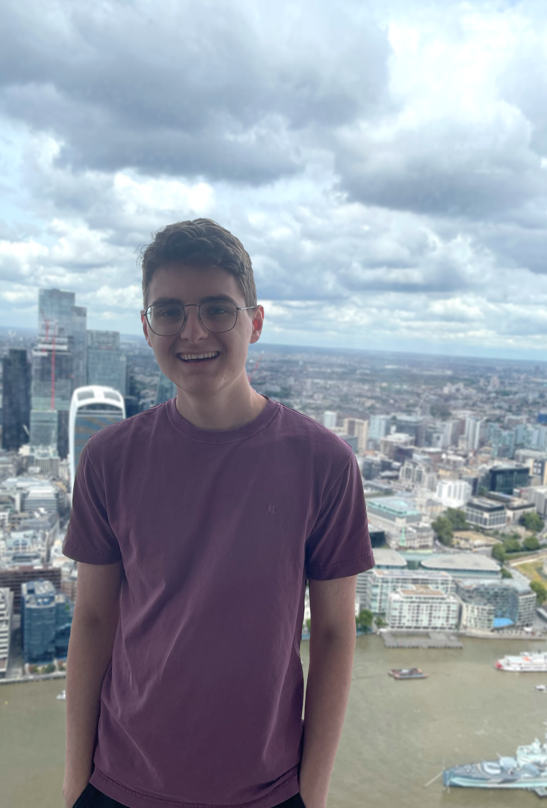

|

|
|
Hi! I'm Alex Felderean.
I'm a second year Honors student studying Computer Science and Engineering at the Ohio State University.
Alongside my classwork, I spend time organizing events through the Competative Programming Club, designing prosthetics for Design For 90 with biology in mind, and developing new opportunities within OHI/O hackathons.
In addition, I currently work for multiple departments at Ohio State.
I am a lab teaching assistant within the Honors Engineering program, working alongside faculty to provide enriching experiences through a variety of disciplines.
I am also a data archive assistant within FITS, helping manage metadata within the university's architectural database.
Outside of my studies, I am always looking to further explore the world around me.
Playing the piano, creating 2D artwork, and swimming have been some staple hobbies of mine for many years.
But recently, I have also invested myself into new avenues of software development, artistic representation, and visual design.
|